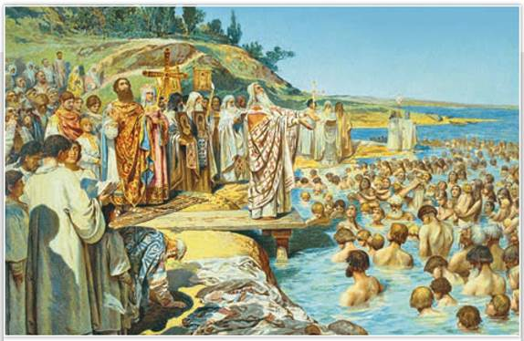
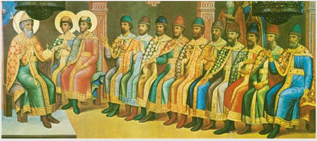
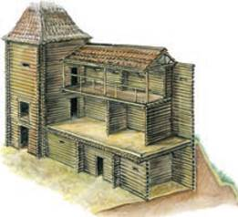
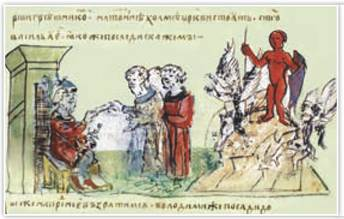
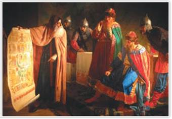
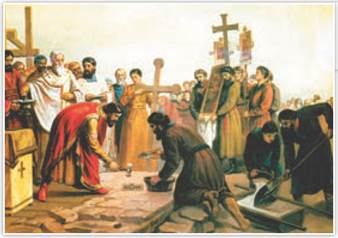
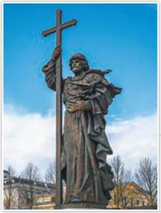

Крещение киевлян. Художник К. Лебедев. 1898 г.
Опишите обряд крещения, изображённый на картине.
РОССИЯ
МИР
1. Борьба Святославичей за власть и начало княжения Владимира. После смерти Святослава в Киеве княжил его старший сын Ярополк, в древлянской земле правил его средний сын Олег, а в Новгороде — младший Владимир. В 977—980 гг. между сыновьями Святослава разгорелась вражда — княжеская усобица, в ходе которой Ярополк и Олег погибли. Победителем в борьбе братьев за власть вышел Владимир Святославич (978/980—1015). Он стал править в Киеве.
Владимир начал борьбу за расширение границ Руси. В 981 г. он присоединил Перемышль, Червен и другие города на юго-западной границе Руси. В 981—982 гг. Владимир окончательно покорил вятичей, в 984 г. — радимичей. В 983 г. он взял дань с балтского племени ятвягов и вместе со своим дядей Добрыней успешно воевал с Волжской Булгарией.
2. Система управления государством в конце X — начале XI в. Знатные воины считали князя Владимира первым среди равных. Княжескую власть ограничивал совет старших дружинников. Как и прежде, существовало вече, но собиралось оно не регулярно, а по особо важным делам.
При Владимире Святославиче из летописи исчезают упоминания о племенных князьях. Составные части территории Руси (княжеские владения) назывались волостями (от слова «власть»). Киевский князь назначал в стольные города волостей своих представителей — наместников. На конец правления Владимира историкам достоверно известно о девяти волостях. Главной функцией наместника был сбор дани. Часть собранной дани князья-наместники отправляли в Киев.

Великий князь Владимир Святославич с сыновьями. Роспись восточной стены Грановитой палаты Московского Кремля
Когда подросли сыновья Владимира, он сделал их князьями-наместниками в разных волостях. Из летописи известно о двенадцати сыновьях Владимира.
Основным способом сбора дани по-прежнему являлось полюдье. Суд вершили, опираясь на устные правовые обычаи — Закон русский.
3. Внешняя политика князя Владимира. Желая иметь союзника, Владимир устроил династический брак своего старшего сына Святополка с дочерью польского князя Болеслава Храброго.
С Византийской империей Русь вела выгодную торговлю, но одновременно и соперничала в Северном Причерноморье. Главной опорой Византии в Крыму был Херсонес (Корсунь). Русское влияние на юге шло через Тмутаракань на Тамани. При Владимире к Руси отошла восточная часть Крымского полуострова с городом, который русские называли Корчев (современная Керчь).
В летописи есть сообщение о набегах печенегов на Русь в конце X в. Степняки захватывали имущество, скот, угоняли людей. По приказу Владимира на южных рубежах начали возводить городки-крепости — Белгород-Киевский, Переяславль-Русский и др. Из лесных завалов и сторожевых башен создали четыре линии обороны. Пограничные крепости заселялись выходцами из разных уголков Руси, так что оборона рубежей государства стала общерусским делом.

Часть крепостной стены. Реконструкция
Сторожевые крепости располагались так, что с высокой деревянной башни каждой из них была видна соседняя застава. При появлении врага дозор южной башни разжигал костёр из сырых дров, дающих много дыма. Дым видел дозор соседней крепости и поступал так же. В считаные часы тревожная весть доходила до столицы. Таким образом печенеги лишились фактора неожиданности, главного их преимущества в нападениях на границы Руси.

Воздвижение на холме в Киеве Перуна. Миниатюра из Радзивилловской летописи
Согласно летописи, идолы Перуна, Дажьбога (Хорса), бога ветра Стрибога, подземного бога Семаргла и богини плодородия Мокоши по приказу князя Владимира поставили на капище Киевской горы (капище — языческое святилище, от слова «капь» — статуя, изображение языческого бога).
4. Религиозная реформа. До 988 г. на Руси продолжали поклоняться многим богам. Владимир провёл реформу многобожия, приказал чтить только шесть главных богов. Но итогами религиозной реформы Владимир остался недоволен. Люди в разных волостях по-прежнему чтили своих богов, а не Перуна, которому поклонялись дружинники. Многобожие разъединяло народ, мешало Руси налаживать контакты с Византией и другими христианскими странами.
На Руси знали об иудаизме от хазар и об исламе от булгар. Но хазары и булгары были врагами, а христианская Византия являлась торговым партнёром Руси и одной из самых богатых стран того времени. Христиан было немало среди тех варягов, что прибыли из Византии в дружину князя на службу. Летописец упоминает о христианском храме в Киеве при описании событий 945 г.
5. Крещение Руси. Вера христиан в существование одного Бога, их отношение к власти монарха как к священной больше подходили русскому обществу X в., чем языческое многобожие. Представления о высшем суде за добрые и дурные поступки могли сплотить жителей Руси.
В 987 г. Византия обратилась за помощью к Руси. Византийский император просил князя Владимира подавить мятеж одного из своих военачальников. Владимир согласился, но при условии, что сестра императора Анна станет его женой.
Великий князь сдержал обещание, но, когда мятеж был подавлен, император забыл о договоре. Тогда Владимир вошёл в Херсонес и пригрозил взять Константинополь, если не получит Анну в жёны. Греки отвечали: не принято у них отдавать христианок в жёны язычникам. Киевский князь обещал креститься. Вскоре в Херсонес прибыла Анна в сопровождении духовенства, и Владимир обратился в христианство. Вслед за князем в 988 г. крестились русская знать и дружина в водах Днепра в Киеве.

Обращение Владимира в христианство. Художник Г. Седов. 1866 г.
Летописец сообщает, как Владимир отправил своих послов узнать о вере мусульман, иудеев, западных и восточных христиан. Неземная красота храмов Византии, торжественность богослужения в них поразили послов. Выслушав рассказы о вере в разных странах, Владимир выбрал христианство по византийскому образцу.
Постепенно славянское население Руси признавало себя христианами. Со временем сельских жителей Руси стали называть крестьянами (от слова «христиане»). Однако среди подданных Киева, особенно в северо-восточных землях, оставалось немало приверженцев древних верований (язычников). Их волхвы возглавили восстания во время голода в Суздале в 1024 г. и в Ростове в 1070-х гг.
Для окончательного утверждения христианства на Руси потребовалось много лет. Кроме того, языческие традиции перемешивались с христианскими, а некоторые христианские святые стали отождествляться с языческими богами. Например, Масленица, которая отмечается и в наши дни, является древним праздником проводов зимы у восточных славян.
Крещение имело для Руси большое значение. С принятием христианства укрепилась власть великого князя, ведь его стали считать слугой Бога на земле. Новая вера освятила княжеский престол:
ТОЧКА ЗРЕНИЯ
Из книги историка М. Погодина «Древняя русская история»
Владимир... как будто переродился и начал новую жизнь... он стал умерен, воздержан, кроток, человеколюбив. Из улицы в улицу разъезжали его слуги и спрашивали: «Где больные и нищие, не могущие ходить», — и раздавали всем, кому что надо. ...Он не хотел казнить смертью даже разбойников.
В чём была причина перерождения князя? Как изменилось его мнение о ценности человеческой жизни?

Закладка Десятинной церкви в Киеве в 989 г. Художник С. Верещагин. 1884 г.
«Всякая душа да будет покорна высшим властям, ибо нет власти не от Бога» — гласит христианское вероучение. Укрепились связи Руси с Византией. Христианский мир Востока и Запада стал видеть в Руси свою часть.
Главой церкви на Руси был киевский митрополит, назначаемый константинопольским патриархом. Митрополиту подчинялись епископы. Первыми митрополитами и епископами на Руси были греки.
Христианская вера смягчила нравы, принесла людям новые нормы поведения: на грабёж и убийство стали смотреть как на грехи, а прежде считали чуть ли не доблестью. Христиане осуждали алчность, видели во всяком человеке «божью душу».
Крещение дало мощный толчок развитию культуры. У греков русские мастера учились строить каменные храмы, украшать их фресками, мозаиками и иконами. В Киеве византийские зодчие возвели первый каменный храм — церковь в честь Успения Пресвятой Богородицы. Её называли Десятинной, так как Владимир жертвовал ей десятину — десятую часть своих доходов.
При Десятинной церкви записывали важнейшие события, переводили книги, учили славянской грамоте. Также Владимир ввёл Церковный устав, основанный на греческом сборнике церковных правил.

Памятник князю Владимиру. Скульптор С. Щербаков. 2016 г. Москва
Князь Владимир вошёл в историю как собиратель и защитник русских земель, дальновидный политик, духовный основатель Руси.
В княжение Владимира были объединены все восточнославянские общности. По мнению многих историков, Крещение способствовало слиянию их в единый древнерусский народ. Новая вера крепила единство страны. Как креститель Руси Владимир был позже причислен к лику святых (канонизирован). Князя-крестителя народ прославил в былинах. В них Владимир Святославич назван Красным Солнышком, защитником Руси от кочевников. Воспеты и подвиги его богатырей — крестьянского сына Ильи Муромца, Алёши Поповича и боярина Добрыни, прототипом которого стал дядя князя Добрыня Малкович. Запали в память народа княжеские пиры — когда «ласковый князь» Владимир угощал дружину и весь Киев, а больным и убогим посылал еду на дом.
ПОДВЕДЁМ ИТОГИ
Князь Владимир укрепил южные границы Руси. Ему удалось расширить территорию государства. В период правления Владимира произошло Крещение Руси, Русская земля стала частью христианского мира.
Вопросы и задания
Работаем с хронологией
Расположите в хронологической последовательности события:
Работаем с источником
I. Прочитайте фрагмент из «Повести временных лет» и ответьте на вопросы.
В год 6495 (987). И созвал Владимир бояр своих и старцев и сказал им: «Вот пришли посланные нами мужи, послушаем же всё, что было с ними», и обратился к послам: «Говорите перед дружиною». Они же сказали: «И пришли мы в Греческую землю, и ввели нас туда, где служат они Богу своему, и не знали мы — на небе или на земле мы, ибо нет на земле такого зрелища; и красоты такой, и не знаем, как и рассказать об этом, знаем мы только, что пребывает там Бог с людьми, и служба их лучше, чем во всех других странах...» Сказали же бояре: «Если бы плох был закон греческий, то не приняла бы его бабка твоя Ольга, а была она мудрейшей из всех людей».
II. Прочитайте фрагмент из сочинения историка Н. Карамзина «История государства Российского» и ответьте на вопрос.
Довольно, что Владимир, приняв веру Спасителя, освятился ею в сердце своём и стал иным человеком. Главное право его на вечную славу и благодарность потомства состоит, конечно, в том, что он поставил россиян на путь истинной веры; но имя Великого принадлежит ему и за дела государственные. Сей князь, похитив единовластие, благоразумным и счастливым для народа правлением загладил вину свою; выслав мятежных варягов из России, употребил лучших из них в её пользу; смирил бунты своих данников, отражал набеги хищных соседей, победил сильного Мечислава и славный храбростию народ ятвяжский; расширил пределы государства на западе; мужеством дружины своей утвердил венец на слабой главе восточных императоров; старался просветить Россию: населил пустыни, основал новые города; любил советоваться с мудрыми боярами о полезных уставах земских; завёл училища и призывал из Греции не только иереев, но и художников...
Работаем с понятиями
ДОПОЛНИТЕЛЬНЫЕ МАТЕРИАЛЫ
«УЧИТЕЛЮ И УЧЕНИКУ».
Материалы к параграфу на портале «История.РФ».